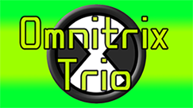
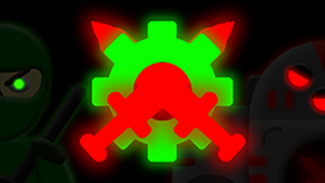

Omnitrix Trio
Description:
This was the third animation project I created for my Animation 1 class at Mizzou. The assignment was to create a metamorphic loop animation-creating three vastly different images, animating a small action for each one, and then morphing from one to another in a loopable animation. It was also required to add sound effects to the animation. I chose to animate the faces of three aliens from the classic cartoon of my childhood, Ben 10. I chose the aliens Four Arms, Grey Matter, and XLR8, each one performing a character-specific action before their faces morphed to the next alien with a green glow. I also added sound effects used from the show for each action and transition transformation to make the animation feel more accurate to the cartoon.
Reflection:
This project was not only one of my favorites to make, but also has become one of my most successful, gaining over 13 thousand views on youtube, my highest viewed video ever! Making the animation was difficult at first, but slowly I got the hang of it, and the process allowed me to learn a lot useful tips and tricks to use later on, like how to use twines to automate parts of animations, rather than having to go frame by frame, and how to sync audio and animation together.

Fists Of Fury
Description:
This animation was my final project for my Animation 1 class. The assignment was to create a 1 minute video using puppets-characters animated using rigged joints and body parts-that would tell a story. It was required to have a walk cycle segment, a lip sync segment, and various establishing shots. I went above and beyond and created a 3 minute animation, featuring two characters from my in-development book series. I recorded the voices of both characters. I designed each one, created the puppets, and rigged them in Adobe Animate. All the backgrounds were also created by me. The video is a modified version of a scene from my book, with the two characters having a conversation after a battle before the main character gets back up and fights the villain one more time.
Reflection:
While the video doesn’t have that many views, it’s still the project I am most proud of. It not only allowed me to show my creativity and passion, but also for the first time visualize and demonstrate how these characters would look and act in my book. I not only learned even more strategies and tips, but also a lot of values in creating animation, mainly how difficult it can be to do so with deadlines and how much a production relies on multiple people working on different aspects of the animation, rather than one person doing it all.
Hollow Knight-The Art of Combat
Description:
This was my final project for my Video Games & Storytelling class: an in-depth video essay about an aspect of a video game. I chose to focus on the details and intricacies of Hollow Knight’s combat mechanics. Specifically, what made each piece of the game’s combat fit together and why they flowed so well, how well made they were and what made them stand out to players. I started by replaying the game, writing notes every time I thought of something to discuss and recording all the gameplay. Then, I narrowed down my points and organized them based on categories. After that I wrote a script using the notes I made. After some revisions I used the final version of the script to record my commentary for the video and added them to Premiere along with the recorded game clips. I arranged various clips to match what I was talking about in the video. Once all the clips were properly arranged, I added title cards, transition cards, and ending credits to organize the video. I then created an animated intro for the video. Afterwards I gathered music from the official Hollow Knight soundtrack and sound effects to use from Pixabay. I added those audio files to Premiere and placed them into the video to match the mood and themes of each part of the video. Once all the audio and visuals were complete, I exported the video.
Reflection:
While the video is technically done, I am still working on making a better, more personalized version of it. That being said, I believe this video is my strongest piece of work, at least in terms of depth. Put a lot of thought, time, and effort into the script, and I believe that shows in the video. I also learned a lot about what makes a good video essay, mainly how to write fluent and well-spoken scripts that aren’t too long or short, how to balance both objectivity and personalization, and how to align the visuals with my talking points.